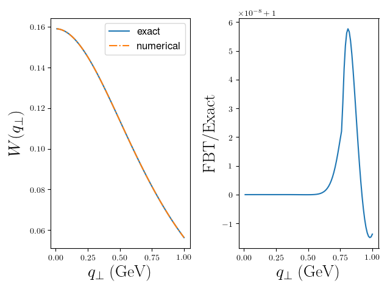

Usage¶
The code is available for download in Python, C++, as well as Fortran 77. The code contains example programs for each language.
Dependencies¶
- Only Linux and OSX are supported.
- Python package relies on Numpy and Scipy libraries. We recommend that the user installs anaconda for either python2 or python3 before using the library.
- C++ package relies either on Boost dependency or GSL dependency.
- Fortran 77 package is a standalone and has no external dependencies.
Installation¶
Clone the codes from https://github.com/UCLA-TMD/Ogata.
For python add the Ogata/python/ directory to the environmental variable PYTHONPATH by executing the following.
PYTHONPATH=path2Ogata:$PYTHONPATH
Python Example¶
Here we will give an example use for FBT in python 2.7. This follows ‘example.py’ in the repository and is used to numerically perform the integration
Begin by importing all external dependencies.
import numpy as np
import pylab as py
from matplotlib import rc
rc('font',**{'family':'sans-serif','sans-serif':['Helvetica']})
rc('text',usetex=True)
Now import the adaptive quadrature class and initialize for \(\nu=0\).
from FBT import FBT
nu = 0
fbt = FBT(nu)
Define our function.
test = lambda b: b*np.exp(-b)
Set our parameters.
N=10
Q=1.0 # inverse of where test(b) peaks in bt space
q=np.linspace(0.01,1,1000)
nu=0
Gather data.
exact = lambda qT: (1+qT**2)**(-1.5) #Known analytic Hankel transform
wexact = [exact(_q) for _q in q]
wfbt = [fbt.fbt(test,_q,N,Q,nu) for _q in q]
ratios = [wfbt[i]/wexact[i] for i in range(len(q))]
Plot.
ax=py.subplot(121)
ax.plot(q,wexact,'-',label='exact')
ax.plot(q,wfbt,'-.',label='numerical')
ax.set_xlabel(r'$q_{\perp}\; \rm (GeV)$',fontsize=20)
ax.set_ylabel(r'$W(q_{\perp})$',fontsize=20)
ax.legend(fontsize=12)
ax=py.subplot(122)
ax.plot(q,ratios)
ax.set_xlabel(r'$q_{\perp}\; \rm (GeV)$',fontsize=20)
ax.set_ylabel(r'\rm fbt/Exact',fontsize=20)
py.tight_layout()
py.show()
FORTRAN77 Example¶
Here we will give an example use for FBT in FORTRAN77.
The program example.f writes the \(\textrm{FBT}\) result along with the exact result to “output.dat” for a range of values of \(q_\perp\).
program example
implicit none
real*8 qt,Q,z,fuu,ex,exact,test_fun
external test_fun,fbt
integer nu,n
integer i
open(unit = 1, file = "output.dat")
write(1, *) 'qT fbt exact'
do i = 1, 100
qt = 0.01*i
Q=1d0
nu=0 ! nu the order of the Bessel function
z=1d0 ! z momentum fraction for fragmentation, set equal to one for other applications
n = 10 ! number of nodes
ex = exact(qT) ! analytic result
call fbt(test_fun,qt,Q,nu,z,n,fuu)
write(1,*) qT,fuu,ex
enddo
close(1)
end program
The test function is defined in this program.
real*8 function test_fun(b)
implicit none
real*8 b
test_fun = b*dexp(-b)
end function
The analytic Bessel transform of the test function is also in this file.
real*8 function exact(qT)
real*8 qT
real*8 pi
pi = datan(1d0)*4d0
exact = (1d0+qT*qT)**(-1.5d0)/2d0/pi
end
To generate the test, issue the following commands.
make
./example.out
python plot.py
The output should be the following figure.
